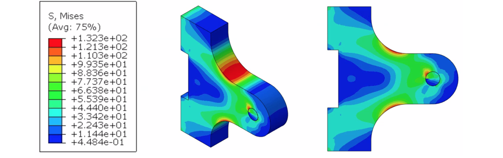
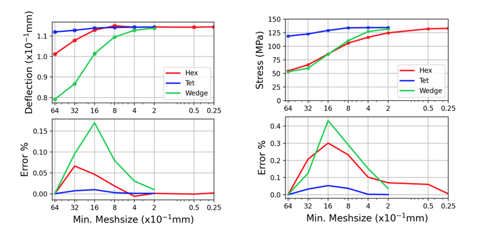
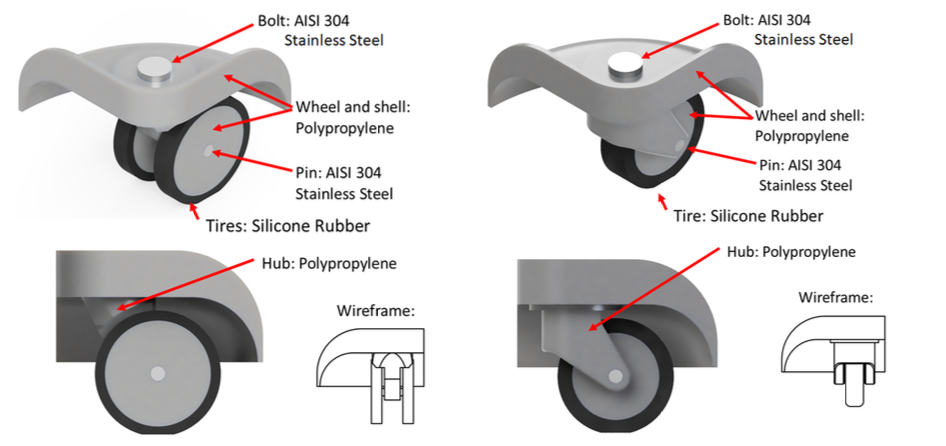
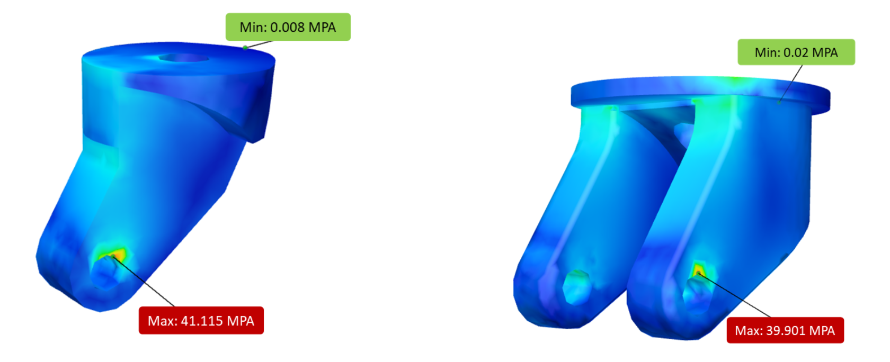

FEA Stress Analysis
Lifting Lug Case Study
This project was a hypothetical study into the structural integrity and fatigue performance of a lifting lug under static and vibration-induced cyclic loading. Finite element analysis was used to quantify safety factors for static failure, while crack growth caused by cyclic loading was analysed using numerical modelling techniques.
ABAQUS finite element analysis was used to determine the forces required to induce static failure within the lifting lug component under the expected loading regime.
Results were post-processed using Python and error plots were generated to assess convergence of maximum stress and tip deflection with increasing mesh fidelity.
The analysis outcomes were used to determine whether the component was suitable for operation within its intended loading regime, and to assess whether design modification would be required to ensure safe long-term service.
Suitcase Wheel Dynamic Impact Simulation
To evaluate the durability of alternative suitcase wheel designs, a dynamic finite element impact simulation was performed to model failure caused by handling and drop events during normal luggage operation. The analysis compared two supplier wheel configurations: a double-spinner wheel and a single-spinner wheel. Both designs were modelled in CAD using manufacturer technical drawings and assigned material of rubber for the tyres, polypropylene for the hub, and steel for the fasteners.
A dynamic impact study was conducted to replicate realistic drop loading scenarios commonly experienced during airport handling and transportation. The wheel assembly was modelled independently and assigned an initial velocity representing a vertical drop from a defined height. The impact velocity was calculated using gravitational acceleration relationships (i.e. v=√(2gh)).
Simulation results identified stress concentrations occurring within the wheel hub near the axle connection for both designs. However, the single-spinner configuration demonstrated significantly improved structural performance, with a higher failure velocity and increased allowable drop height before material failure occurred. This corresponded to approximately a 68% improvement in safety factor compared to the original double-spinner configuration.
The simulation provided quantitative evidence that the single-spinner design offered improved durability while remaining compatible with existing manufacturing and supply chain constraints. The results supported selection of the alternative design to improve product reliability and reduce potential warranty failures. It was recognised that modelling assumptions introduce uncertainty, and physical validation testing was recommended to confirm simulation predictions.